Think IT（シンクイット）
https://thinkit.co.jp/
【Think IT】“オープンソース技術の実践活用メディア” をスローガンに、インプレスグループが運営するエンジニアのための技術解説サイト。開発の現場で役立つノウハウ記事を毎日公開しています。
フィード
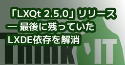
「LXQt 2.5.0」リリース ─ 最後に残っていたLXDE依存を解消
Think IT（シンクイット）
「LXQt 2.5.0」リリース ─ 最後に残っていたLXDE依存を解消 QTerminalとPCManFM-Qtを強化、最小要件をQt 6.10へ引き上げkawahara2026年11月7日シェア ポスト はてブ 優先するニュース提供元に追加 LXDEは11月5日(現地時間)、軽量デスクトップ環境の最新版「LXQt 2.5.0」をリリースした。 「LXQt」は、Qtを使用して構築されたオープンソースのデスクトップ環境。比較的少ないリソースで動作しながら、パネル、ファイルマネージャ、設定ツール、ターミナルなどのデスクトップ機能を提供し、LinuxやFreeBSDなどで利用できる。 「LXQt 2.5.0」では、最後に残っていたLXDE由来の依存関係「menu-cache」を廃止した。デスクトップメニューの生成処理はlibfm-qtへ組み込まれ、従来より高速に処理できるとしている。また、動作に必要なQtの最小バージョンはQt 6.10.0へ引き上げられた。 「LXQt 2.5.0」のハイライトは次の通り。 「LXQt」は、Webサイトから入手できる。(川原 龍人/びぎねっと)[関連リンク]リリースアナウンスRelease(GitHub) この記事をシェアしてください シェアする ポストする >ブクマする noteで書く 優先するニュース提供元にThink ITを追加 前の記事musl libc環境のsshdで認証回避の脆弱性 ─ OpenSSH 10.6p2などで対策 関連記事この記事の筆者 kawahara kawaharaのプロフィールを見る 筆者の人気記事 Linuxカーネルに重要な脆弱性「CVE-2026-98432」─ IPv4経由で遠隔DoSのおそれ10月31日 0:54 「Apache HTTP Server 2.4.69」リリース ─ 20件の脆弱性を修正10月3日 23:23 「Python 3.15.2/3.14.10/3.13.18/3.12.16/3.11.18」リリース ─ 侵害されたeMudhraのCA鍵をブロック10月26日 16:52 「PHP 8.5.12」など4系列を緊急リリース ─ CriticalのRCE脆弱性2件を修正10月22日 10:29 「Ubuntu 26.10」リリース ─ Rust製coreutilsへ全面移行10
20時間前
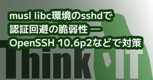
musl libc環境のsshdで認証回避の脆弱性 ─ OpenSSH 10.6p2などで対策
Think IT（シンクイット）
musl libc環境のsshdで認証回避の脆弱性 ─ OpenSSH 10.6p2などで対策 Alpine LinuxのPAM無効構成が影響、256バイトを超えるパスワード入力で未設定アカウントへログイン可能kawahara2026年11月7日シェア ポスト はてブ 優先するニュース提供元に追加 OpenSSH ProjectとAlpine Linux Teamは11月5日(現地時間)、musl libcを使用し、PAMを無効化した一部のLinux環境で、sshdのパスワード認証を回避できる脆弱性「CVE-2026-123158」を公表した。対策としてPortable OpenSSH 10.6p2と、Alpine Linuxの各安定系列向け更新パッケージが公開されている。 「CVE-2026-123158」の深刻度はCVSS v3.1で8.1(High)。影響する構成では、攻撃者がSSHポートへ接続できれば、対象アカウントのパスワードを知らなくてもログインできる可能性がある。 PAMを使用しないsshdは、入力されたパスワードをCライブラリの「crypt()」でハッシュ化し、保存されているパスワードフィールドと比較する。musl libcの「crypt()」は、256バイトを超えるパスワードを処理できない場合にエラーを示す文字列「*」を返す。この値が、パスワード未設定アカウントのフィールドに格納されている「*」と一致するため、認証が成功したものとして扱われる。 Alpine Linuxの通常のopenssh-serverはPAMなしで構築されているため、代表的な影響環境となる。「openssh-server-pam」でも「UsePAM no」とした場合は影響を受ける。一方、glibcを使用するLinux、Linux以外のOS、PAMによるパスワード認証を使用する環境、パスワード認証を無効化している環境は影響を受けない。 Alpine Linuxの公式tiny-cloudイメージでは、パスワードフィールドが「*」の「alpine」ユーザと、パスワードなしで利用できる「doas」が設定されている版がある。初期状態では攻撃条件を満たさないが、管理者が別のアカウントへパスワードを設定するなどして「$6$」形式のハッシュが作成されると、alpineユーザーへのログインとro
21時間前
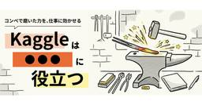
Kaggleは「仏教理解」に役立つ ー「Word2Vec」で読み解く、龍樹の「空」の概念
Think IT（シンクイット）
Kaggleは「仏教理解」に役立つ ー「Word2Vec」で読み解く、龍樹の「空」の概念itoh2026年11月6日Kaggleは「○○」に役立つシェア ポスト はてブ 優先するニュース提供元に追加 【編集部注】本稿での仏教概念の引用は「Word2Vec」との比喩的な対比を目的とした筆者独自の解釈であり、現在の各宗派の教義での概念とは異なる場合があります。はじめに私は関西電力の火力部門でAI業務を担当していますが、情報系ではなく強電系の電気工学専攻出身のため、大学でも会社でもプログラミングすら碌にしていませんでした。そんな私が機械学習に興味を持ったきっかけは、10年以上前に交通事故で負傷し、入院や自宅療養のためしばらく休職していた時に、自動運転系の機械学習に興味を持ったことでした。以降、機械学習や統計を独学で学び、色々なコンペに挑戦した後、Kaggleでは約3年前にCompetition Expertになりました。 さて、Kaggleはあなたのこれからのキャリアの役に立つ、機械学習への理解を深めるのに役に立つ、コンペという実例を通して実戦経験を積める……そんなことは他の人が語るはずなので、私はKagglerとしての知識が、全然関係無さそうなところでも役に立つという話をします。 具体的にはタイトルの如く、仏教、それも比較的歴史の古い、インド中期仏教、龍樹(ナーガールジュナ)の「空」に関する話です。釈迦「空」の概念に至るまでの仏教思想の流れを説明するため、まず仏教の開祖である釈迦の話をします。彼は紀元前6世紀頃にインドで仏教を広めました。主な教えの１つは縁起です。あらゆる結果は原因によって現れる。結果が嫌であればその原因の原因の……の原因の原因を絶てばよい。よって究極の苦しみである死の恐怖から逃れたければ、その原因の原因の……の原因の原因である無知を取り除けばよい、つまり「物事を正しく理解すれば死は怖くない」ということを説きました。因果推論を頑張れと言っているわけですね。もう１つは中道です。釈迦はネパールの王子だったので若い頃ははっちゃけすぎていましたが、心機一転した後には修行のための断食で死にかけました。それら両極端を経験したことから、何事もやらないのもやりすぎるのも良くない、両極端から離れる中庸が良いということを説きました。また、当時のインドには、例えば肉体と精神は
2日前
【KubeCon Japan 2026】LFの新プロジェクトAkritesの概要をJim Zemlinの解説から紹介
Think IT（シンクイット）
KubeCon＋CloudNativeCon Japan 2026から、LFが発表したAkritesというプロジェクトの概要を解説するセッションからその内容を紹介する。セッションを担ったのは、The Linux FoundationのCEOであるJim Zemlin氏である。これはKubeCon Japan 2026の初日のキーノートセッションの直後に行われたプレスカンファレンスで、日本語のスライド、英語によるプレゼンテーションという形式のものとなった。 Zemlin氏のプレゼンテーションはLF/CNCFの哲学のコアとなる「オープンなソフトウェア開発が最良の方法＝オープンモデル」と「Akrites」という新しいプロジェクトを並べてタイトルにした内容となった。 このスライドでは生成AIの登場によって、ITへの設備投資が過去最大になったことを示して、生成AIが社会のインフラストラクチャーとして最大の変革を起こしていることを説明した。 このスライドではITインフラストラクチャーのあらゆるレイヤーでオープンソースが使われていることを説明。ここでは生成AIにフォーカスしてインフラストラクチャーとしてLinuxとKubernetes、コンテナランタイムのContainerd、そして機械学習のバッチジョブをスケジューリングするVolcanoなどが例として挙げられている。モデルの学習にはPyTorch、DeepSpeed、Rayなど、推論にはvLLM、llm-d、モデルにはLlama、Qwen、DeepSeek、GLM、Kimi、Mistral、そしてエージェントのレイヤーにはMCP、A2A、x402、AGENTS.md、Gooseなどが列挙されている。 ここではOpenAIやAnthropicなどのクローズドのフロンティアモデルの性能にオープンなモデルが追いつくためにはこれまでは数年かかっていたものが、数か月で追いつくようになったことを示して、まだクローズドなモデルに優位性はあるもののその差は小さくなっていると説明した。ここからはオープンソース、オープンウェイトのモデルが日本市場において重要であることを解説する内容となった。 ここではオープンソース、オープンウェイトが重要であることの前提として、パブリックなサービスとしての大規模言語モデル利用ではなくモデルを自社のインフラストラク
2日前
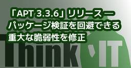
「APT 3.3.6」リリース ─ パッケージ検証を回避できる重大な脆弱性を修正
Think IT（シンクイット）
「APT 3.3.6」リリース ─ パッケージ検証を回避できる重大な脆弱性を修正 未検証のパッケージをインストールし、root権限でコードを実行される可能性kawahara2026年11月6日シェア ポスト はてブ 優先するニュース提供元に追加 APT開発チームは11月4日(現地時間)、パッケージ管理システム「APT 3.3.6」をリリースした。 「APT 3.3.6」は、Debian testing／unstable向けの開発系列3.3系列のアップデートリリース。通信経路上の攻撃者などがパッケージの検証を回避し、未検証のパッケージをインストールさせる可能性がある脆弱性「CVE-2026-109518」が修正された。このほか、パッケージ解析や依存関係ソルバーの範囲外アクセスにつながる問題にも対応している。 「APT 3.3.6」のハイライトは次の通り。 Debian 13「trixie」ではAPT 3.0.4、Debian 12「bookworm」ではAPT 2.6.2が修正版として公開された。Debian testing「forky」とunstable「sid」ではAPT 3.3.6が修正版となる。Ubuntuなどの派生ディストリビューションでも、それぞれの配布元が提供するセキュリティ更新を適用する必要がある。(川原 龍人/びぎねっと)[関連リンク]APT 3.3.6APTセキュリティ更新情報 この記事をシェアしてください シェアする ポストする >ブクマする noteで書く 優先するニュース提供元にThink ITを追加 前の記事「rsync 3.5.2」リリース ─ CPU枯渇を招く脆弱性を修正 次の記事musl libc環境のsshdで認証回避の脆弱性 ─ OpenSSH 10.6p2などで対策 関連記事この記事の筆者 kawahara kawaharaのプロフィールを見る 筆者の人気記事 Linuxカーネルに重要な脆弱性「CVE-2026-98432」─ IPv4経由で遠隔DoSのおそれ10月31日 0:54 「Apache HTTP Server 2.4.69」リリース ─ 20件の脆弱性を修正10月3日 23:23 「Python 3.15.2/3.14.10/3.13.18/3.12.16/3.11.18」リリース ─ 侵害されたeMudhraのCA
2日前
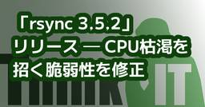
「rsync 3.5.2」リリース ─ CPU枯渇を招く脆弱性を修正
Think IT（シンクイット）
「rsync 3.5.2」リリース ─ CPU枯渇を招く脆弱性を修正 中断した転送のデータ破損やrrsync、デーモン関連の問題にも対応kawahara2026年11月6日シェア ポスト はてブ 優先するニュース提供元に追加 rsync Projectは11月4日(現地時間)、ファイル同期ツールの最新版「rsync 3.5.2」をリリースした。 「rsync」は、ファイル全体ではなく変更された部分を転送する差分転送アルゴリズムを備えたオープンソースのファイルコピー／同期ツール。ローカル環境やSSH経由のバックアップ、サーバー間同期、公開ミラーの配布などに広く利用されている。 「rsync 3.5.2」は、rsync 3.5系列の最新安定版となるアップデートリリース。悪意のある受信側によって送信側のCPU資源を枯渇させられる脆弱性「CVE-2026-119741」が修正されたほか、中断した転送、制限付きrsync環境、デーモンモードなどに関する問題が修正された。 「rsync 3.5.2」のハイライトは次の通り。 「rsync」は、Webサイトから入手できる。(川原 龍人/びぎねっと)[関連リンク]リリースアナウンスNEWS この記事をシェアしてください シェアする ポストする >ブクマする noteで書く 優先するニュース提供元にThink ITを追加 前の記事「Cinnamon 6.8」リリース ─ Waylandを正式サポート 次の記事「APT 3.3.6」リリース ─ パッケージ検証を回避できる重大な脆弱性を修正 関連記事この記事の筆者 kawahara kawaharaのプロフィールを見る 筆者の人気記事 Linuxカーネルに重要な脆弱性「CVE-2026-98432」─ IPv4経由で遠隔DoSのおそれ10月31日 0:54 「Apache HTTP Server 2.4.69」リリース ─ 20件の脆弱性を修正10月3日 23:23 「Python 3.15.2/3.14.10/3.13.18/3.12.16/3.11.18」リリース ─ 侵害されたeMudhraのCA鍵をブロック10月26日 16:52 「PHP 8.5.12」など4系列を緊急リリース ─ CriticalのRCE脆弱性2件を修正10月22日 10:29 「Ubuntu 26.10」リ
2日前
「Cinnamon 6.8」リリース ─ Waylandを正式サポート
Think IT（シンクイット）
「Cinnamon 6.8」リリース ─ Waylandを正式サポート 1対1トラックパッドジェスチャーやNemoのプレビューペインを追加kawahara2026年11月6日シェア ポスト はてブ 優先するニュース提供元に追加 Linux Mint Projectは11月4日(現地時間)、デスクトップ環境の最新版「Cinnamon 6.8」をリリースした。 「Cinnamon」は、伝統的なパネルやアプリケーションメニューを備えながら、GNOME由来の技術を利用するオープンソースのデスクトップ環境。Linux Mintの標準デスクトップとして開発されているほか、複数のLinuxディストリビューションで利用できる。 「Cinnamon 6.8」のハイライトは次の通り。 Wayland関連では、ウィンドウのサイズや位置、ポップアップメニュー、入力フォーカスなどに関する多数の問題が修正された。Muffinウィンドウマネージャーでは、NVIDIA GPUを含む描画処理や画面構成変更時の安定性も改善されている。 新しい1対1トラックパッドジェスチャーでは、指の移動量に応じてワークスペースやウィンドウの切り替え表示が追従する。連続したスワイプ、Overview上でのドラッグ、ウィンドウスイッチャーなどに関する不具合も修正された。 Cinnamonは、GitHubから入手できる。(川原 龍人/びぎねっと)[関連リンク]Release(GitHub)Cinnamon この記事をシェアしてください シェアする ポストする >ブクマする noteで書く 優先するニュース提供元にThink ITを追加 前の記事「Fedora Linux 45」リリース ─ 標準コンソールをkmsconへ移行 次の記事「rsync 3.5.2」リリース ─ CPU枯渇を招く脆弱性を修正 関連記事この記事の筆者 kawahara kawaharaのプロフィールを見る 筆者の人気記事 Linuxカーネルに重要な脆弱性「CVE-2026-98432」─ IPv4経由で遠隔DoSのおそれ10月31日 0:54 「Apache HTTP Server 2.4.69」リリース ─ 20件の脆弱性を修正10月3日 23:23 「Python 3.15.2/3.14.10/3.13.18/3.12.16/3.11.18」リ
2日前
【号外：AIの魔法より、泥臭いデモ動画が勝った日】183名が挑んだ5時間のYCハッカソン「c0mpiled」参戦記
Think IT（シンクイット）
世界最高峰のスタートアップアクセラレーターであるY Combinator(YC)。彼らが「今、最も市場機会がある領域」とするテーマに、わずか5時間で挑むハッカソン「c0mpiled in Japan pt.3」が、2026年7月5日、立命館大学 大阪いばらきキャンパスにて開催された。関西初開催となる本イベントには、YCのPresident & CEOであるGarry Tan(ゲイリー・タン)氏も来日。180名を超えるエンジニアや起業家が集結した。筆者(Givin' Back 田中悠介)も参加者としてこの場に挑んだ一人だ。本稿では、グローバル基準の洗礼を受けた熱狂の1日と、ハッカソン終了後の打ち上げの席で準優勝チームが明かした「極めて泥臭いスタートアップのリアル」についてレポートする。終了直後のチーム写真。5時間の死闘。筆者が突きつけられた「仮説に賭ける力」今回のハッカソンの制限時間はわずか5時間。当日は、Garry Tan氏が開発したツール「GStack」や「GBrain」の考え方も活用しながら、初対面の多国籍メンバー同士がチームを組み、実装からデモ動画の制作までを一気に進めるという極限の環境だった。筆者自身も、即席のグローバルチームを組成し開発サイクルを回した。英語でのコミュニケーションやYCというプレッシャーの中でも、自身の「チームをまとめ、納品まで丸める力」は世界基準でも通用すると確信できた。しかし同時に、トップレベルの環境だからこそ痛感した壁もある。それは、自身の「情報感度の高さ」が招く罠だ。周囲の新しい意見を拾い上げる能力が高いがゆえに、情報を集めすぎてしまい、短期決戦において肝心の「意思決定」がブレそうになる瞬間があった。プロジェクトを綺麗にまとめるだけでは、非連続な成長は生まれない。微かなシグナルを掴んだ自身の仮説に対し、ノイズをシャットアウトして「退路を断って賭け切る力」こそが、真のブレイクスルーには必要なのだ。Nextrootsが会場で呼ばれた瞬間の様子、筆者の知人でもあり、撮影に興奮した。AIの魔法を捨てた準優勝チーム「Nextroots」の生存戦略この5時間一本勝負において、見事準優勝(2nd Place)に輝いたのが、ACTIVATION Lab卒業生の北河正洋氏ら、全員が製造業出身のエンジニアで構成されたチーム「Nextroots」だ。ハッ
3日前
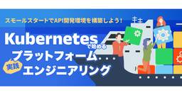
「OpenTelemetry」と「Grafana」でプロダクトチームが自分のサービスを監視できる基盤を作ろう
Think IT（シンクイット）
はじめにここまで、全4回に渡ってKubernetes上に最小限のプラットフォームを構築し、共有ゲートウェイによるルーティングと認可、開発者ポータルBackstageによるゴールデンパスの提供、そしてプロダクトチームからフィードバックを受け取る仕組みまでを整えてきました。プロダクトチームはBackstageのテンプレートから新しいサービスを作り始め、決められた手順でKubernetesにデプロイできるようになっています。さらに、前回追加したフィードバックの仕組みにより、プラットフォームチームは提供した機能がプロダクトチームにどう受け止められているかを知ることもできるようになりました。しかし、デプロイした後のことを考えると、まだ大きな課題が残っています。それが「監視」です。現状、プロダクトチームが自分のサービスの状態を知る手段はコンテナのログをkubectl logsで覗く程度に限られており、「サービスは今どのくらいのリクエストをさばいているのか」「エラーが増えていないか、その原因は何か」といった問いに、すぐには答えられません。本記事ではこの課題を解決すべく、プラットフォームチーム側でオブザーバビリティの基盤を用意し、さらにプロダクトチームへ計装(アプリケーションに観測データを出力させる設定)をあらかじめ組み込んだゴールデンパステンプレートを提供します。これにより、プロダクトチームはテンプレートから作ったサービスをデプロイするだけで、計装のコードを自分で書くことなく、自分のサービスのメトリクスとログを見られるようになります。まずオブザーバビリティの基本的な考え方を整理し、続いて観測データを収集・保存・可視化する基盤(「OpenTelemetry Collector」「Prometheus」「Loki」「Grafana」)をKubernetesにデプロイします。その後、第3回のゴールデンパステンプレートにOpenTelemetryによる計装を組み込みます。最後に、テンプレートから作ったサービスを動かし、メトリクスとログを実際に確認します。 図1：今回のアーキテクチャ図オブザーバビリティとはシステムが正常に動いているのか、問題が起きたときに何が原因なのかを、外部から取得できる情報だけで把握できる能力を「オブザーバビリティ(可観測性)」と呼びます。もともとは制御工学の用語で、
3日前
DevOpsの「Ops」にAIをどのように組み込んでいくのか 1
1
Think IT（シンクイット）
はじめに「DevOps」という言葉が生まれる前、開発(Dev)と運用(Ops)は別々の部署であり、別々の目標を持っていました。開発チームは新機能を素早くリリースすることを目指し、運用チームはシステムを安定稼働させることを目指します。この2つの目標はしばしば対立し、「Dev vs Ops」という構図が生まれていました。新機能のリリースはシステムの不安定化リスクを伴うため、運用チームはリリースに慎重な姿勢を取り、開発チームはそれを変化を嫌う壁と感じていました。DevOpsという考え方は、この対立を「Dev and Ops」という協調関係へ変えるために提唱されました。開発と運用が同じゴール(顧客へ価値を素早くかつ安全に届けること)を共有し、ツールとプロセスを通じて協力する体制を目指したのです。本連載も、このDevOpsのサイクルを一つひとつのツールを通じて実践する形で進めてきました。では、AI時代において、このDevとOpsの関係はどうなっていくのでしょうか。前回では、「Dev」側に焦点を当てました。要件定義や設計、実装、コードレビュー、テスト、ドキュメント管理といった開発ライフサイクルの各フェーズでAIがどのように使われ始めているかを解説しました。多くの開発現場では、人手不足や締め切りに追われて導入できなかった自動テストやコードレビューの徹底を、AIの補助によって現実的なコストで運用できる可能性が出てきたことを見てきました。今回はその対となる「Ops」に焦点を当てます。運用の現場でも、監視を強化したい、障害対応を自動化したいと分かっていながら、人手不足や既存システムの複雑さから手が回らなかった現場は少なくありません。Opsライフサイクルの各フェーズで起きている変化AIの活用は、単一の作業の自動化にとどまりません。監視、障害対応、インフラ運用、セキュリティ運用のそれぞれで、作業のやり方が変わり始めています。 Opsライフサイクルの各フェーズでのAI活用監視とオブザーバビリティ従来の監視は、CloudWatchアラームのように閾値を人間が設定し、その閾値を超えたら通知する仕組みが中心でした(第19〜20回で解説した内容です)。閾値の設定には経験と調整が必要であり、閾値が厳しすぎれば誤検知が増え、緩すぎれば異常を見逃します。近年の監視サービスは、この閾値設定そのものをAIに任
4日前
【OSS Summit North America 2026】ドローンのグラウンドコントロールシステムであるQGC（QGroundControl）に関するセッションを紹介
Think IT（シンクイット）
Open Source Summit North America 2026からドローンのグラウンドコントロールシステムであるQGC（QGroundControl）に関するセッションを紹介する。カンファレンスにはEmbedded Linux Conferenceが併催されていたことからドローンおよびその周辺に関するソフトウェアのセッションも実施されていたということだろう。QGCはマルチプラットフォームのアプリケーション開発のためのフレームワーク、Qtの上で構築されたドローン操作を行う地上局用アプリケーションだ。QGCの最新アップデートを紹介Qtはトヨタが車載システムのアプリケーションフレームワークとして採用していたが、今はGoogleが開発してオープンソース化したFlutterに移行している。Qtもオープンソースではあるが、商用ライセンスが複雑であるという。しかしながらQtにはリアルタイム通信や組込システムでの長い実績があり、ドローンの地上局の用途では最適ということだろう。この稿ではQGCの最新情報と、ドローンの利用では最先端の中国の状況をSIGGRAPHのセッションと合わせて考察する。 QGCについての概要を解説したこのスライドでは「QGCとは何か？」について簡潔に解説している。 オープンソースのアプリケーション開発フレームワークであるQtをベースにしてWindows、macOS、Linux、Android、iOSというマルチプラットフォームで実行できるというのが最初に語られたポイントである。しかしセッションの中でWilkins氏は「iPhoneでQGCを使っている人には会ったことがない」と語っており、ドローンのコントローラーとしては圧倒的にAndroidが優勢のようだ。iPhoneおよびiPadに向けてはDJIがプロプライエタリなドローンの完全なシステムを提供しており、ホビー向けにはDJIの製品が、それ以外のドローンと地上管制用にはAndroidとQGCの組み合わせが使われるという棲み分けのようだ。 この画面はGoogle Mapのような地上の写真に行き先や高度などのパラメータが設定されているのがわかる。 また実際のデバイスの写真も紹介し、ゲームコントローラーのような外見の機材が使われていることがわかる。 最新バージョンで追加された多くの新機能が紹介された。 コン
4日前
「Fedora Linux 45」リリース ─ 標準コンソールをkmsconへ移行
Think IT（シンクイット）
「Fedora Linux 45」リリース ─ 標準コンソールをkmsconへ移行 GNOME 51やKDE Plasma 6.8.1を収録、パッケージ署名の検証も強化kawahara2026年11月4日シェア ポスト はてブ 優先するニュース提供元に追加 Fedora Projectは11月3日(現地時間)、Linuxディストリビューションの最新版「Fedora Linux 45」をリリースした。 「Fedora Linux」は、最新のLinux技術を積極的に取り込むコミュニティ主導のLinuxディストリビューション。デスクトップ向けのFedora WorkstationとFedora KDE Plasma Desktopをはじめ、Server、Cloud、IoT、CoreOS、Atomic Desktopsなどが提供される。 「Fedora Linux 45」では、カーネル内の従来型コンソール「fbcon」に代えて、ユーザー空間で動作する「kmscon」を標準コンソールとして採用した。パッケージ管理ではRPM 6.1を導入し、署名を検証できないパッケージを標準で拒否するなど、セキュリティ面も強化されている。 「Fedora Linux 45」のハイライトは次の通り。 kmsconは、KMS／DRMを利用して画面を描画するユーザー空間のコンソール。従来のカーネルコンソールと比べてフォントやUnicodeの扱いを改善し、より現代的な表示を可能にする。 RPMでは署名検証が標準で強制され、正しく署名されていないパッケージは、明示的に検証を無効化しない限りインストールできなくなった。自作RPMやサードパーティー製パッケージを使用している環境では、アップグレード前に署名の有無を確認する必要がある。 Fedora Linux 45は、Webサイトから入手できる。(川原 龍人/びぎねっと)[関連リンク]Blogによる記事Fedora 45Fedora Linux 45 Final Go／No-Go会議ログ この記事をシェアしてください シェアする ポストする >ブクマする noteで書く 優先するニュース提供元にThink ITを追加 前の記事「Enlightenment 0.28.0」リリース ─ NetworkManagerとPipeWireにネイティブ対応 次の記事「C
4日前
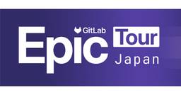
【GitLab Epic Tour Japan 2026】AIエージェント時代に「スピードと統制」を両立する「Governed Software Factory」とは
Think IT（シンクイット）
GitLabは2026年10月9日、年次イベント「GitLab Epic Tour Japan 2026」を開催しました。テーマは、AIエージェントが開発の主役になりつつある時代に「スピード」と「統制」をどう両立させるかです。冒頭の基調講演では、米GitLabのChief Product and Marketing OfficerであるManav Khurana氏が、同社の新たなビジョン「Governed Software Factory(統制されたソフトウェアファクトリー)」を提示しました。続いてGitLab合同会社 ソリューションアーキテクト本部長の藤田 周氏が、そのビジョンを構成する4つのレイヤーについて、製品機能とデモを交えて解説しました。本稿では両セッションの内容を紹介します。「Opening Remarks & GitLab とGitLab Duo Agent Platform のビジョンについて」ーーエージェント時代に必要なのは「Governed Software Factory」(Manav Khurana氏)1年でアカウント数は5,000万から7,000万へKhurana氏はまず、Epic Tourを始めた理由を「AIによってソフトウェアエンジニアリングが非常に速いペースで変化している」ためだと説明しました。コミュニティが互いに学び、GitLabの最新の取り組みと市場の方向性を知る場として位置づけています。同氏によれば、GitLabのアカウント数は約1年前の約5,000万から7,000万に増加しました。前四半期には新規顧客数が前年比で倍増し、今四半期はさらに伸びが加速しているといいます。顧客はソフトウェア、政府・公共、製造、運輸、自動車など、あらゆる業種に広がっています。 米GitLab Chief Product and Marketing Officer Manav Khurana氏GitLabが選ばれる3つの理由同氏は、企業がGitLabを選ぶ理由として次の3点を挙げました。クラウド・モデルに中立：最重要資産であるコードを自社環境、シングルテナント、マルチテナントのいずれにも置け、どのベンダーのモデルも選べる単一の統合プラットフォーム：開発ライフサイクル全体で複数ツールをつなぎ合わせる必要がなく、摩擦が少ない全工程でのエージェント支援：コーデ
5日前
復旧時間を83%短縮、ただし重要な対処は人が承認――NTTデータ先端技術がHinemosで障害対応の自律化を検証
Think IT（シンクイット）
📌 このニュース、3行で押さえるなら 📌NTTデータ先端技術が、統合運用管理ソフトウェア「Hinemos」においてAIエージェント技術を用いた実証実験を開始した。期間は2026年10月1日から12月31日まで。障害対応の自律化、ジョブ異常発生時の影響・原因調査、アラートメッセージの抑制・集約ルール作成の3テーマで適用可能性を検証する中核となる障害対応の自律化では、Hinemosによる障害検知を契機に、AIエージェントが運用情報の収集、原因分析、対処方法の選定・実行、復旧確認、結果報告までを遂行する。社内開発環境における検証では、特定のユースケースで復旧時間を83%短縮する効果を確認している対処方法をルールベースで選定することで説明可能性を担保し、影響の大きい対処の場合は実行前に人による承認プロセスを設けるHuman-in-the-loopを取り入れる。2027年度上期をめどにHinemosでのサービス化を推進する📝 Think IT編集部の見解 📝この実証実験の設計で目を引くのは、自律化を謳いながら2か所に歯止めを置いている点だ。1つは対処方法の選定をルールベースで行うこと。LLMに判断させるのではなく、あらかじめ定義されたルールから選ばせる。リリースはその理由を「説明可能性を担保」と説明している。障害対応では、なぜその対処を選んだのかを事後に説明できなければ、ポストモーテムも再発防止策の検討も成り立たない。推論過程がブラックボックスのままでは、運用の改善サイクルに乗らないという判断だろう。もう1つが、影響の大きい対処に人の承認を挟むHuman-in-the-loopだ。添付の図を見ると、承認のステップに「責任は人が負う」と明記されている。AIが提案し人が承認するという形式は多くの製品が採るが、責任の所在をここまで明示しているのは珍しい。本番環境への変更を誰の判断として記録するかという、運用上避けて通れない論点に正面から答えている。83%という数字の読み方には注意が必要だ。リリースは「社内開発環境における障害復旧を対象に検証を進めており、特定のユースケースにおいて」と条件を明記している。本番環境ではなく、かつ特定のケースでの結果である。今後は対象とする障害パターンを拡大しながら検証を継続するとしており、現時点では適用範囲が限定されていると理解すべきだろう。先...
5日前
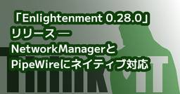
「Enlightenment 0.28.0」リリース ─ NetworkManagerとPipeWireにネイティブ対応
Think IT（シンクイット）
「Enlightenment 0.28.0」リリース ─ NetworkManagerとPipeWireにネイティブ対応 クリップボード履歴やバッテリー充電上限、NetBSD初期対応も追加kawahara2026年11月3日シェア ポスト はてブ 優先するニュース提供元に追加 Enlightenment teamは10月31日(現地時間)、デスクトップシェル「Enlightenment 0.28.0」をリリースした。 「Enlightenment」は、ウィンドウ管理、アプリケーション起動、ファイル操作、電源管理などの機能を備えるオープンソースのデスクトップシェル。軽量性と豊富なカスタマイズ機能を特徴とし、主にLinuxやBSDなどのUnix系OSで利用されている。X11を中心に、Waylandコンポジタとしての機能も開発されている。 「Enlightenment 0.28.0」では、ネットワーク、音声、クリップボード、電源管理などデスクトップの基本機能を強化した。NetworkManager用モジュールやPipeWire対応ミキサー、クリップボード履歴を追加したほか、ウィンドウ管理、ディスプレイ、Bluetooth、通知などの多数の不具合を修正している。 「Enlightenment 0.28.0」のハイライトは次の通り。 NetworkManagerモジュールでは、電波強度やセキュリティ方式、接続情報を表示でき、保存済み接続の管理にも対応した。通信量インジケーターやポーリング間隔の設定も追加されている。VPNでは設定ファイルのインポートや認証メッセージ、入力内容の記憶を利用できる。 このほか、クリップボード履歴をEnlightenment本体へ統合し、履歴の永続保存や項目ごとの削除に対応した。電源管理ではバッテリーの充電上限を設定でき、画面消灯中のCPU監視頻度を抑えることで不要な電力消費を減らしている。 「Enlightment 0.28.0」は、Webサイトから入手できる。(川原 龍人/びぎねっと)[関連リンク]リリースアナウンス この記事をシェアしてください シェアする ポストする >ブクマする noteで書く 優先するニュース提供元にThink ITを追加 前の記事「Node.js 26.13.0」リリース ─ コードネーム「Lithium」のLTSへ移行
5日前
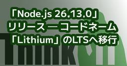
「Node.js 26.13.0」リリース ─ コードネーム「Lithium」のLTSへ移行
Think IT（シンクイット）
「Node.js 26.13.0」リリース ─ コードネーム「Lithium」のLTSへ移行 2029年4月末まで更新を提供、26.12.1からのコード変更はなしkawahara2026年11月3日シェア ポスト はてブ 優先するニュース提供元に追加 Node.js Projectは10月28日(現地時間)、JavaScript実行環境「Node.js 26.13.0」をリリースした。 Node.jsは、Webブラウザ以外の環境でJavaScriptを実行するためのオープンソースソフトウェア。Webアプリケーションのサーバーやコマンドラインツール、開発支援ツールなどに広く利用されている。 Node.js 26.13.0では、Node.js 26系列が「Current」から長期サポート版の「Active LTS」へ移行した。LTSのコードネームは「Lithium」。2027年10月20日までActive LTSとして更新され、その後はMaintenance LTSへ移行し、2029年4月30日にサポートを終了する予定となっている。 26.13.0は、LTSへの移行を示すメタデータを更新したリリースで、直前の26.12.1から実行コードの変更はない。Node.js 26.12.1では、TLS、DNS、Brotli、HTTP、暗号処理、権限モデル、zlibに関する9件のCVEが修正されており、26.13.0にもこれらの修正が含まれる。 同日には、Maintenance LTS系列の「Node.js 24.22.2」も公開された。Node.js 24系列はコードネーム「Krypton」として2028年4月末まで保守される。一方、Node.js 27系列は現在Alpha段階であり、プロジェクトは本番環境ではActive LTSまたはMaintenance LTS系列の利用を推奨している。(川原 龍人/びぎねっと)[関連リンク]リリースノート26.12.1リリースノート この記事をシェアしてください シェアする ポストする >ブクマする noteで書く 優先するニュース提供元にThink ITを追加 前の記事「Squid 7.8」リリース ─ 設定解析時のバッファーオーバーフローを修正 次の記事「Enlightenment 0.28.0」リリース ─ NetworkManage
5日前
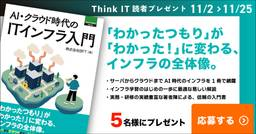
インフラの全体像が、この1冊でわかる！『AI・クラウド時代のITインフラ入門』を5名様にプレゼント！ 1
Think IT（シンクイット）
インフラの全体像が、この1冊でわかる！『AI・クラウド時代のITインフラ入門』を5名様にプレゼント！nishi-d2026年11月2日 Think ITで実施している読者プレゼント企画です。ご応募お待ちしています。 シェア ポスト はてブ 優先するニュース提供元に追加 今すぐ応募する! 著者：株式会社BFT 著価格：2,640円（税込）ページ数：320ページ出版社：インプレスISBN：9784295026006書籍を詳しく調べる 目次Chapter 1 ITインフラの全体像Chapter 2 サーバChapter 3 ネットワークChapter 4 ストレージChapter 5 OSChapter 6 ミドルウェア(Web,AP,DB)Chapter 7 仮想化Chapter 8 クラウドChapter 9 インフラ設計と非機能要件Chapter 10 構築とテストChapter 11 システム運用Chapter 12 バックアップと災害対策Chapter 13 DevOps・SREChapter 14 セキュリティChapter 15 プログラミングChapter 16 生成AIとインフラエンジニアChapter 17 インフラエンジニアの仕事「わかったつもり」が「わかった！」に変わる、インフラの全体像 ITインフラは、あらゆる情報システムを支える基本中の基本と言える知識分野です。しかし、大学の情報学科でも体系的に教えられることは少なく、新人研修の現場でも学ぶ機会が限られています。サーバ、ネットワーク、クラウド……用語は知っていても、それらがどうつながって動いているのかを説明できる新人エンジニアは多くありません。本書は、そんな「わかったつもり」の状態から抜け出すための入門書です。現場のエンジニア集団・株式会社BFTが、システム構築の最前線と研修事業の両方で培った「初学者がつまずくポイント」の知見を注ぎ込み、インフラ技術の全体像を1冊にまとめました。■本書の特徴インフラ全体を網羅的・体系的に学べる現場を知る著者陣による、やさしい解説クラウド時代・AI時代に対応インフラエンジニアの「仕事」がイメージできるインフラの学習は、覚えることが多く、範囲も広大です。だからこそ、最初に「全体の地図」を手に入れることが、遠回りに見えて実は最短ルートになります。本書を読み終えたとき、
6日前
【KubeCon Japan 2026】スバルとヒュンダイがキーノートに登壇、ユースケースを語る
Think IT（シンクイット）
KubeCon＋CloudNativeCon Japan 2026の初日、2026年7月29日のキーノートセッションの一部として行われたスバルとヒュンダイのセッションを紹介する。製造業の両社だが、スバルのプレゼンテーションは運転支援システムのEyeSight開発に関わるプロセスの高速化、ヒュンダイはプライベートクラウドのリージョンを跨いでコンテナイメージの利用を可能にしたソリューションを解説する内容だ。プレゼンテーションを行ったのはスバルが自動運転システムの開発部門に所属するDevOpsエンジニアの小林遼爾氏、ヒュンダイは子会社で2000年に創業された車輛向けのソフトウェア開発を専業とするHyundai AutoEver所属のDevOpsエンジニアであるJaewoo Choi氏だ。Choi氏はArgoCDのメンテナーでもある。スバル スバルのユースケースは今回のユースケースアワードを受賞しており、このプレゼンテーションではそのユースケースを解説する内容となった。 EyeSightについては、2030年に死亡に及ぶ交通事故をゼロにするという高い目標を掲げて開発が進められていることを紹介。スバルのEyeSightはLiDARを使わずにステレオカメラだけで道路や車線、車輛、歩行者、障害物などを認識する独自の機械学習システムでAMD/XilinxのSoC上で構築されている。スバルはセンサーから画像処理のロジック、制御ソフトウェア、実行する半導体の仕様まで社内で開発するという上から下まで一貫して社内開発を貫いている企業だ。このプレゼンテーションは画像処理を行うデータを収めた巨大なコンテナをいかに高速にGPUサーバーでトレーニングさせるか？ という課題に挑戦したことを解説するものだ。 スバルが抱えていた課題について3つの軸で解説。ここでは巨大な学習データを収めたコンテナイメージをリポジトリーからGPUサーバーにプルする際の通信時間が最大で約3時間という時間がかかっていたこと、Kubernetes上でのイメージのプルや学習データの用意などのステップがすべてHelmのコマンドラインを実行するというマニュアル操作になっていたこと、そしてステップ自体をワークフローとして自動化していなかったことを挙げて順に説明を行った。 専用の高速ネットワークを用意して転送速度を改善最初に紹介したのはコ
6日前
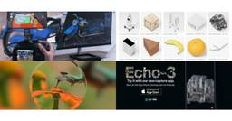
ソニーXYNの3DCGアセット生成技術、ワールドモデル「Genie 4」発表 ほか
Think IT（シンクイット）
今週も、バーチャル領域の最新動向をお届けします。ソニーの空間コンテンツ制作ソリューション「XYN」は、撮影画像からフォトリアルな3DCGアセットを生成する技術を強化しました。NVIDIAはシミュレーション対応の3Dアセット2,575点をHugging Faceで公開しています。また、映像と同時に環境音や会話まで生成するワールドモデル「Genie 4」や、iPhoneで撮影した空間を実寸大の3D環境として再現するSpAItialの「Echo-3」が発表されるなど、3Dコンテンツ生成やワールドモデルの話題が目立ちました。ソニーのXYN、独自アルゴリズムを用いて画像からフォトリアルな3DCGアセットを生成する技術の詳細を発表 ソニーは、空間コンテンツ制作ソリューション群「XYN」のアップデートを日本と米国で提供開始し、画像からフォトリアルな3DCGアセットを生成する技術の詳細を発表しました。クラウドアプリ「XYN Spatial Scan」の「XYN Venusアルゴリズム」を強化し、ミラーレス一眼カメラやiPhoneで撮影した最大500枚の画像から、反射や光沢まで忠実に再現します。フォトグラメトリなどが苦手としたガラスの透明感や細い物体も精巧に表現でき、処理はクラウドで完結します。撮影支援アプリへのアシストモード追加や、バーチャルプロダクション向けプラグインのAximmetry対応も行われました。料金は無料プランのほか、月額3,300円（税込）からの有料プランがあり、オンライン決済の開始により個人のプロクリエイターも導入できるようになりました。本ニュースの詳細はこちら：ソニーのXYN、独自アルゴリズムを用いて画像からフォトリアルな3DCGアセットを生成する技術の詳細を発表https://www.moguravr.com/sony-xyn-object-3dcg-update/NVIDIA、シミュレーション対応3Dアセット2,575点をHugging Faceで公開 NVIDIAは、3Dアセット集「NVIDIA SimReady Assets」を、機械学習のモデルやデータセットを共有するプラットフォームHugging Faceで公開しました。収録数は2,575点にのぼります。収録対象は日用品や工具、産業機器で、各モデルには物理設定と、物体が何であるかをコンピューター側が判
6日前
「Squid 7.8」リリース ─ 設定解析時のバッファーオーバーフローを修正
Think IT（シンクイット）
「Squid 7.8」リリース ─ 設定解析時のバッファーオーバーフローを修正 HTTP、FTP、ICAP、ICPなど異常なプロトコル入力への耐性も強化kawahara2026年11月2日シェア ポスト はてブ 優先するニュース提供元に追加 Squid HTTP Proxy teamは10月31日(現地時間)、オープンソースのプロキシ・Webキャッシュソフトウェア「Squid 7.8」をリリースした。 「Squid」は、HTTPやHTTPS、FTPなどの通信を中継するプロキシサーバ。コンテンツのキャッシュによる通信量の削減や応答の高速化に加え、アクセス制御、認証、コンテンツフィルタリングなどに利用できる。 「Squid 7.8」は、現在の安定系列であるSquid 7の修正リリース。HTTP、FTP、ICAP、Cache Digest、WCCP、ICPなどで不正または異常なデータを処理した際の信頼性を改善したほか、不正な設定によってクラッシュやバッファーオーバーフローが発生する問題も修正された。 「Squid 7.8」のハイライトは次の通り。 Squid 7.8は、GitHubから入手できる。(川原 龍人/びぎねっと)[関連リンク]リリースアナウンスSquid 7.8(GitHub) この記事をシェアしてください シェアする ポストする >ブクマする noteで書く 優先するニュース提供元にThink ITを追加 前の記事「PyTorch 2.15」リリース ─ 新しいNCCLバックエンドを標準化 次の記事「Node.js 26.13.0」リリース ─ コードネーム「Lithium」のLTSへ移行 関連記事この記事の筆者 kawahara kawaharaのプロフィールを見る 筆者の人気記事 Linuxカーネルに重要な脆弱性「CVE-2026-98432」─ IPv4経由で遠隔DoSのおそれ10月31日 0:54 「Apache HTTP Server 2.4.69」リリース ─ 20件の脆弱性を修正10月3日 23:23 「Python 3.15.2/3.14.10/3.13.18/3.12.16/3.11.18」リリース ─ 侵害されたeMudhraのCA鍵をブロック10月26日 16:52 「PHP 8.5.12」など4系列を緊急リリース ─ Criticalの
6日前
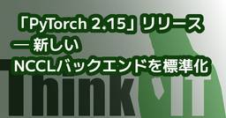
「PyTorch 2.15」リリース ─ 新しいNCCLバックエンドを標準化
Think IT（シンクイット）
「PyTorch 2.15」リリース ─ 新しいNCCLバックエンドを標準化 CUDA 13.2やPython 3.15に対応、BlackwellとApple Siliconで推論性能を強化kawahara2026年11月1日シェア ポスト はてブ 優先するニュース提供元に追加 PyTorch Foundationは10月28日(現地時間)、オープンソースの機械学習フレームワーク「PyTorch 2.15」をリリースした。 「PyTorch」は、テンソル演算や自動微分、ニューラルネットワーク構築、GPUアクセラレーションなどの機能を備える機械学習フレームワーク。研究開発から大規模なAIモデルの学習・推論まで幅広く利用されている。 「PyTorch 2.15」は、分散学習基盤や低精度演算、各社のGPUへの対応などが強化されたアップデートリリース。PyTorch 2.14でプレビュー提供されていた新しいNCCLバックエンドが標準となったほか、NVIDIA Blackwell、AMD Instinct、Intel GPU、Apple Silicon向けの機能や性能が改善されている。 「PyTorch 2.15」のハイライトは次の通り。 分散学習では、PyTorch側で再設計されたNCCLバックエンドが「nccl」の標準実装となった。通信処理が停止した際にはFlight Recorderが各プロセスの状態を記録するため、大規模なGPUクラスターで問題の原因を調査しやすくなる。 ハードウェア対応では、NVIDIA Blackwell上で4ビットのNVFP4を利用したLLMデコードを高速化した。Apple SiliconではFP8演算やMoEモデル向けの高速化を追加し、AMD GPUでは次世代Instinct向け機能を拡充している。Windows版のCUDAビルドでも、Ampere以降のGPUでFlashAttentionが利用可能になった。 セキュリティ関連では、「torch.load(weights_only=True)」で不正なチェックポイントを処理する際の問題や、「torch_shm_manager」で長いUnixソケットパスを扱った際のスタックバッファーオーバーフローなどが修正された。 PyTorch 2.15のバイナリはPyPIおよびWebサイトから入手できる。(川
6日前
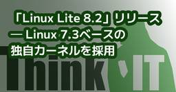
「Linux Lite 8.2」リリース ─ Linux 7.3ベースの独自カーネルを採用
Think IT（シンクイット）
「Linux Lite 8.2」リリース ─ Linux 7.3ベースの独自カーネルを採用 Ubuntu 26.04.1 LTSをベースに、暗号化インストールやNVIDIA対応を改善kawahara2026年11月1日シェア ポスト はてブ 優先するニュース提供元に追加 Linux Lite development teamは11月1日(現地時間)、Linuxディストリビューション「Linux Lite 8.2(Hematite)」をリリースした。 Linux Liteは、Ubuntu LTSを基盤にXfceデスクトップ環境を採用するLinuxディストリビューション。初心者にも扱いやすいデスクトップ環境と、システム更新やドライバ管理などを支援する独自ツールを備える。 Linux Lite 8.2は、Ubuntu 26.04.1 LTSを基盤とし、XfceとLightDMを採用する。Linuxカーネルは、メインラインのLinux 7.3をベースに、独自の設定と一部のCachyOSパッチを適用した「Linux Lite Advanced Performance Kernels」にアップデートされた。 Linux Lite 8.2のハイライトは次の通り。 Linux Lite 8.2は、Webサイトから入手できる。(川原 龍人/びぎねっと)[関連リンク]リリースアナウンス この記事をシェアしてください シェアする ポストする >ブクマする noteで書く 優先するニュース提供元にThink ITを追加 前の記事Linuxカーネルに重要な脆弱性「CVE-2026-98432」─ IPv4経由で遠隔DoSのおそれ 次の記事「PyTorch 2.15」リリース ─ 新しいNCCLバックエンドを標準化 関連記事この記事の筆者 kawahara kawaharaのプロフィールを見る 筆者の人気記事 Linuxカーネルに重要な脆弱性「CVE-2026-98432」─ IPv4経由で遠隔DoSのおそれ10月31日 0:54 「Apache HTTP Server 2.4.69」リリース ─ 20件の脆弱性を修正10月3日 23:23 「Python 3.15.2/3.14.10/3.13.18/3.12.16/3.11.18」リリース ─ 侵害されたeMudhraのCA鍵をブロック10
6日前
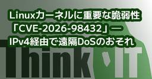
Linuxカーネルに重要な脆弱性「CVE-2026-98432」─ IPv4経由で遠隔DoSのおそれ
Think IT（シンクイット）
Linuxカーネルに重要な脆弱性「CVE-2026-98432」─ IPv4経由で遠隔DoSのおそれ 認証なしで攻撃可能、確認の上アップデートをkawahara2026年10月31日シェア ポスト はてブ Linux kernel CVE teamは10月15日(現地時間)、IPv4のTCP処理における脆弱性「CVE-2026-98432」について注意喚起を発表しており、その後、各セキュリティベンダーなどが注意を呼びかけている。 「CVE-2026-98432」は、TCP接続要求を処理するLinuxカーネルのIPv4ネットワーク機能に存在するuse-after-freeの脆弱性。認証されていない遠隔の攻撃者が、外部へ公開されたTCPサービスに細工した通信を送ることで、カーネルクラッシュやメモリー破壊を引き起こす危険がある。 TCP接続要求を受け取ったLinuxカーネルは、要求ソケットが保持するIPv4オプションを新しい接続用ソケットへ引き継ぐ。この際、別のCPUが同じ接続要求の再送SYNを並行して処理すると、SYN/ACKパケットの生成中に参照しているオプションが解放される競合状態が発生する可能性がある。 修正版では、IPv4オプションを直ちに「kfree()」で解放するのではなく、RCUの猶予期間が終了して、ほかのCPUから参照されていないことを確認してから解放する「kfree_rcu()」へ変更された。 CVSS評価は、CVE.orgやUbuntuでは9.8、深刻度「Critical」と非常に高い。 同脆弱性のLinuxカーネルにおける各系列の最初の修正版は、Linux 7.2.10/6.18.56/6.12.113/6.6.159/6.1.190/5.15.223/5.10.272、およびLinux 7.3以降。10月30日に公開されたLinux 7.3.1、7.2.14、6.18.60などにおいては、この修正が適用済みとなっている。また、Linux 7.3では正式リリース前の7.3-rc7で修正されている。ユーザは情報に注意の上、必要に応じてアップデートを適用することが強く推奨される。(川原 龍人/びぎねっと)[関連リンク]CVE-2026-98432(Linux kernel CVE team) CVE-2026-98432(cve.org)Ubuntuセ
8日前

「クラウドネイティブは進化する」AI時代に再び広がる可能性とは? ――CloudNative Days共同チェアに聞く
Think IT（シンクイット）
2026年11月18日(水)～19日(木)、クラウドネイティブをテーマとする国内最大級のエンジニアカンファレンス「CloudNative Days Winter 2026」(CNDW2026)が開催される。会場は有明セントラルタワー ホール＆カンファレンスで、オンライン配信も行われる。AIの急速な進化によって、ITエンジニアを取り巻く技術や仕事のあり方が大きく変わる中、CloudNative Daysは今年、参加者に何を伝えようとしているのか。同イベントの共同チェアを務める青山 真也氏と岡本 泰典氏に、開催に込めた思いや今年の見どころを聞いた。 「CloudNative Days Winter 2026」の公式サイト「Scaling Together」に込めた思い――CloudNative Daysは2025年から2026年にかけて「Scaling Together」というテーマを掲げています。どのような思いが込められているのでしょうか。青山氏： この言葉を選んだのは、2025年のKubeCon Japanの初開催がきっかけです。ここ10年ほどでクラウドネイティブの技術は大きく発展し、コミュニティも広がってきました。そしてKubeConの日本上陸によって国内のコミュニティがさらに盛り上がり、新しい人たちも加わってくるだろうと期待していました。その中で、私たち自身もコミュニティと一緒に成長し、クラウドネイティブの新しい領域を開拓していきたい。その思いを表したのが「Scaling Together」です。特に「Together」には、コミュニティとともに歩むという、私たちがこれまで大切にしてきた価値観を込めています。岡本氏： ちょうど、CloudNative Daysとして次に何を伝えるべきかを模索していた時期でもありますよね。青山氏： 以前のテーマ「+Native(プラスネイティブ)」には、クラウドを単に利用するだけでなく、クラウドネイティブならではの考え方を取り入れようという意味を込めていました。現在では、クラウドネイティブの技術や考え方も一定の浸透を見せています。そこで、次のステップとして、クラウドネイティブの領域やコミュニティをさらに広げ、発展させていく段階に来ていると考えました。そもそもクラウドネイティブには、スケーラビリティという重要な性質があります。その意
9日前
地球上の「まっすぐ」を理解してST_Touches()の意外な判定結果の謎を解こう
Think IT（シンクイット）
はじめに前回は、基準ポリゴンの下の辺にぴったり接するように作ったはずのポリゴンが、ST_Touches()で 0(FALSE)と判定される動作を紹介しました。一見接しているように見えるこのポリゴンが接していないというのはどういうことなのか。「まっすぐ」とは何かというテーマを軸に、読み解きます。前回のおさらい今回のテーマに関係する2つのポリゴンを示します。@polyが基準ポリゴン、@poly4がその下辺に接するつもりで作った対象のポリゴンです。mysql> SET @poly = ST_GeomFromText( -> 'POLYGON((35 135, 35 135.01, 35.01 135.01, 35.01 135, 35 135))', 6668);mysql> SET @poly4 = ST_GeomFromText( -> 'POLYGON((34.996 135.006, 34.996 135.011, 35 135.011, 35 135.006, 34.996 135.006))', 6668);青い色の基準ポリゴンに対して、その下辺に赤い色の小さなポリゴンが接しているように見えます。この2つのポリゴンに対する ST_Touches()とST_Overlaps()の結果です。mysql> SELECT ST_Touches(@poly, @poly4) Tch, -> ST_Overlaps(@poly, @poly4) Ovl;+------+------+| Tch | Ovl |+------+------+| 0 | 1 |+------+------+1 row in set (0.000 sec)「接しているように見える」という直感に反して、この2つのポリゴンは Touch(接触)しておらず、Overlap(重なり)しているという結果を得ました。MySQLが壊れているのでしょうか。いいえ、これには理由があるのです。 「まっすぐな線」とは何かその謎を紐解くために、地球上での「まっすぐな線」というものを正しく理解する必要があります。規模を拡大したほうが分かりやすいので、先ほどとは別のシンプルな例を考えてみましょう。(北緯, 東経)が (35, 135)と(35,179)の2つの点をイメージしてみてください。この2点を結ぶ直線とはどのようなも
9日前
LFが欧州OSSと低品質AI生成PRを指す「AIスロップ」問題の2つのレポートを公開、OSERAは100日で本格稼働、ほか
Think IT（シンクイット）
「主権」の次は「参加」ーLFが「2026年 欧州オープンソースの現状」レポートを公開Linux Foundation(以下、LF)は2026年10月7日、チェコ・プラハで開催された「Open Source Summit Europe」において、LF Europe、LF Research、NeoNephosとの共同によるレポート「2026 State of Open Source in Europe」(2026年 欧州オープンソースの現状)を公開しました。今年で5回目となる年次レポートで、欧州の組織におけるオープンソースの活用状況、ガバナンス、そしてデジタル主権への取り組みを分析しています。なお、同イベントはLinux誕生35周年を記念する節目の開催でもありました。【参照】2026 State of Open Source Europehttps://www.linuxfoundation.org/research/world-of-open-source-eu-20266月号では同じく欧州を対象とした「2026 State of Tech Talent Europe」を取り上げ、欧州の組織の54%がAI戦略の柱としてオープンソースを位置づけていることを紹介しました。今回のレポートは、その背景にある「デジタル主権」という動機と、それを実現するうえでの課題をより直接的に掘り下げたものです。94%がデジタル主権を重視、ガバナンスの有無でROIに差レポートによると、欧州の組織の94%がデジタル主権を自社の技術戦略にとって重要だと回答しており、そのうち61%は「非常に重要」としています。主な動機はセキュリティとプライバシーです。注目すべきは、オープンソースのガバナンス成熟度とリターンの関係です。高度なオープンソースガバナンスを持つ組織は投資に対して平均4倍超のリターンを得ている一方、正式なガバナンスを持たない組織では3.6倍に留まります。それにもかかわらず、欧州の組織の31%はいまだに正式なオープンソースガバナンスの枠組みを持っておらず、広範な利用と戦略的な管理の間にギャップが残っています。プライベートフォークの「維持税」と規制対応への投資レポートは、プライベートフォークのコストにも光を当てています。48%の組織がオープンソースプロジェクトのプライベートフォークを維持しており
9日前
「WordPress 7.1.4」などがリリース ─ コア更新中のリモートコード実行問題などを修正
Think IT（シンクイット）
「WordPress 7.1.4」などがリリース ─ コア更新中のリモートコード実行問題などを修正 複数の保存型XSSや未公開Customizer情報の漏えいにも対応、旧系列にも修正版kawahara2026年10月30日シェア ポスト はてブ 優先するニュース提供元に追加 WordPress development teamは10月28日(現地時間)、オープンソースのコンテンツ管理システム「WordPress 7.1.4」をリリースした。 「WordPress 7.1.4」は、複数の脆弱性に対応したセキュリティリリース。コアの更新処理における競合状態によって、更新中にリモートコード実行へつながる可能性がある問題のほか、ブロックやInteractivity API、Customizerなどに存在する複数の保存型クロスサイトスクリプティング(XSS)問題が修正された。 「WordPress 7.1.4」の主な修正点は次の通り。 特に重要度が高いのは、WordPressコアの更新処理に存在した競合状態で、更新処理が行われている時間帯にリモートコード実行へつながる可能性があるという。 保存型XSSについては、ContributorやEditor以上の権限を持つ利用者が関係する問題が複数含まれる。複数の投稿者が参加するサイトや、外部ユーザへ投稿権限を付与している環境では、早急な更新が求められる。 同日には旧系列向けとして、WordPress 7.0.8、6.9.11、6.8.12なども公開され、4.7系列には4.7.39が提供された。ただし、開発チームは、積極的に保守され安全に利用できる版は最新の7.1系列のみとしている。旧系列の修正版を適用した場合も、テーマやプラグインとの互換性を確認したうえで7.1系列への移行を検討する必要がある。(川原 龍人/びぎねっと)[関連リンク]リリースアナウンス(7.1.4) この記事をシェアしてください シェアする ポストする >ブクマする noteで書く 優先するニュース提供元にThink ITを追加 前の記事GitHub Copilotの「Assisted permissions」提供開始 ─ 安全と判断した操作を自動承認 次の記事Linuxカーネルに重要な脆弱性「CVE-2026-98432」─ IPv4経由で遠隔DoSのおそれ 関連
9日前
悪用までの猶予が「1分」に迫るフロンティアAI時代に開発と本番を貫く脆弱性管理が必要
Think IT（シンクイット）
悪用までの猶予が「1分」に迫るフロンティアAI時代に開発と本番を貫く脆弱性管理が必要itoh2026年10月29日「インプレス AI Days 2026」レポートシェア ポスト はてブ 優先するニュース提供元に追加 Sponsored by: 日本アイ・ビー・エム株式会社提供：日本アイ・ビー・エム株式会社フロンティアAI(最先端AIモデル)の進化により、脆弱性の発見から悪用までの時間が急速に縮まっている。脆弱性のすべてに手を打つのが現実的でなくなる中、企業にはリスクに基づいて優先順位を付け、修正を素早く本番環境へ反映する体制が欠かせない。日本IBM ソフトウェア事業統括 オートメーション・プラットフォーム事業部 オートメーション・プラットフォーム テクニカルセールスの河野 哲也 氏が「インプレス AI Days 2026」(主催：インプレス、2026年9月15日〜16日)に登壇し、開発段階と本番環境の両面から脆弱性を管理するモデルの具体像を話した。 「脆弱性の数が増えているだけではない。即座に悪用されることが問題になっている」--。日本IBM ソフトウェア事業統括 オートメーション・プラットフォーム事業部 オートメーション・プラットフォーム テクニカルセールスの河野 哲也 氏は、フロンティアAI(最先端AIモデル)がセキュリティにもたらした変化をこう指摘する(写真1)。 写真1：日本IBM ソフトウェア事業統括 オートメーション・プラットフォーム事業部 オートメーション・プラットフォーム テクニカルセールスの河野 哲也 氏国内でも危機感は高まっている。金融庁は2026年5月、フロンティアAIによる脅威を踏まえて金融機関に短期的な対応を求めた。脆弱性の発見から攻撃までのスピードと規模が急拡大していることを指摘し、大量の脆弱性やパッチの発生を前提に、資産管理、脆弱性管理、監視体制を経営主導で早急に強化するよう求めている。背景にあるのは脆弱性の急増だ。新規に登録されるCVE(Common Vulnerabilities and Exposures：共通脆弱性識別子)は2016年の約6400件から増え続け「2026年には約5万9000件と700%以上増える見込み」(河野氏)だ。増加傾向はフロンティアAIの登場以前から続いていたものの、脆弱性の発見もまたAI技術によってさらに
10日前
【AIに相談して買う時代、購入まで任せたい？】調査から見えたAIコマースの課題
Think IT（シンクイット）
本連載は、生成AIコミュニティ「IKIGAI lab.」で活動するメンバーが、それぞれの専門領域で培ってきた知見を持ち寄りながら、生成AIを取り巻く動向を技術・ビジネス・ガバナンスの観点から整理しお届けしています。NTTデータが2026年9月30日に公表した「GenAI生活者インサイトレポート2026 ISSUE 02」では、AIが買い物の意思決定に与える影響が拡大しつつあることが見えてきました。同年8月に全国の15〜69歳のAI利用経験者3,948人を対象に実施した調査では、商品・サービスの購入・利用時にAIを使った人の約7割が、AIの提案を参考に採用した経験があると回答。その割合は3月の前回調査から約8ポイント上昇しており、商品を選ぶ際にAIの提案を取り入れる動きが広がっています。ChatGPTやGeminiに買い物の相談ができること自体は、すでに知られています。では、AIが購買判断に使われる背景には何があり、その提案を購入につなげるには何が必要なのでしょうか。国内の調査結果と、2026年に発表された各社の取り組みから考えてみます。【出典】「GenAI生活者インサイトレポート2026 ISSUE 02」(NTTデータ 2026/09/30)なぜAIが買い物の判断材料になっているのか商品を選ぶ際には、価格や仕様、レビュー、用途との相性など、比較する観点がいくつもあります。候補が増えると、それぞれの違いを確かめながら、何を優先するか迷うこともあるでしょう。AIを使うことで、こうした比較や条件整理の手間を軽減できます。希望する条件に沿った候補の絞り込みや、商品の特徴・違いの整理などを任せられるためです。9月30日公表のNTTデータの詳細レポートでは、AIの提案を採用した1,662人に、その理由を複数回答で尋ねています。最も多かったのは「自分で検索・比較するより速く、手間が省けた」で47.7%でした。さらに、「自分だけではたどり着けない提案だと感じた」が33.0%、「自分の条件・好みに合わせてパーソナライズされていると感じた」が29.4%と続きます。効率性に加え、新たな候補の発見や、自分の条件・好みへの適合も、AIの提案を採用する理由になっていると読み取れます。サービス側も、比較の負担を減らす方向に機能を整えています。OpenAIが3月24日に発表したChatGPTの商
10日前
「Python 3.15.2/3.14.10/3.13.18/3.12.16/3.11.18」リリース ─ 侵害されたeMudhraのCA鍵をブロック
Think IT（シンクイット）
「Python 3.15.2/3.14.10/3.13.18/3.12.16/3.11.18」リリース ─ 侵害されたeMudhraのCA鍵をブロック 「tarfile」の脆弱性にも対応、アップデートをkawahara2026年10月26日シェア ポスト はてブ Python Software Foundationは10月25日(現地時間)、プログラミング言語「Python 3.15.2/3.14.10/3.13.18/3.12.16/3.11.18」をリリースした。 「Python」は、簡潔な構文と豊富なライブラリを特徴とするオープンソースのプログラミング言語。Webアプリケーション、データ分析、機械学習、科学技術計算、システム管理など幅広い分野で利用されている。 「Python 3.15.2」は、Python 3.15系列の最新メンテナンスリリース。侵害されたeMudhra／emSignの中間認証局(CA)鍵へ緊急対応するセキュリティアップデート、tarfileで展開先を置き換えるリンクをブロックするようになるなど、Python 3.15.1から約130件の修正、ビルド改善、文書更新も取り込まれた。 今回、秘密鍵が侵害されたeMudhraの中間CA証明書を、Pythonの「ssl」モジュールが明示的に拒否するよう変更された(CVE-2026-115557への対応)。OSやCA証明書バンドルの更新が遅れている場合に備えた多層防御で、更新後のPythonでは、古いpipを使っている場合でも通常のpip更新を安全に開始できる。「tarfile.tar_filter」でアーカイブを展開する際、リンクによって展開先そのものを置き換えられる問題(CVE-2026-114583)も修正された。 また、「Python 3.14.10」にも、Python 3.15.2と共通するセキュリティ修正と約120件の不具合修正などが含まれる。Python 3.15.2と3.14.10にはバイナリインストーラーが用意される一方、セキュリティ修正のみの段階にあるPython 3.13.18、3.12.16、3.11.18はソースのみの提供となる。(川原 龍人/びぎねっと)[関連リンク]リリースアナウンス(Python 3.15.2) この記事をシェアしてください シェアする ポストする >ブク
12日前